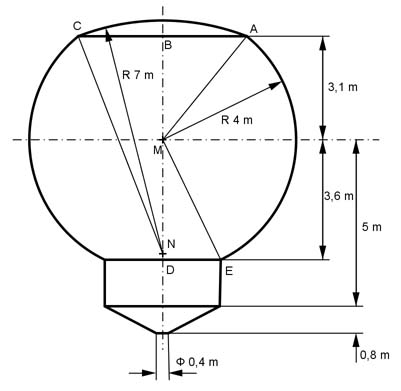

Aufgabe 392 Wie groß ist das Volumen V, das der Behälter für Weizen einschließlich Deckel umfasst?  V = VSchicht1 + VSchicht2 + VZylinder + VKegelstumpf + VKugelabschnitt Satz von Pythagoras im Dreieck MAB: MA = rKugel = 4 m MA² = AB² + MB² |-MB² AB² = MA² - MB² = 4² m² - 3,1² m² = 6,39 m² |√ AB = 2,53 m = r1 von Kugelschicht 1 Satz von Pythagoras im Dreieck NBC: BC = AB NC = rKugel1 = 7 m NC² = NB² + BC² | -BC² NB² = NC² - NB² = 7² m² - 2,53² m² = 42,6 m² |√ NB = 6,53 m hKugelabschnitt = 7 m - 6,53 m = 0,47 m Satz von Pythagoras im Dreieck MDE: ME = rKugel = 4 m ME² = DE² + MD² | -MD² DE² = ME² - MD² = 4² m² - 3,6² m² = 3,04 m² |√ DE = 1,74 m = r1 von Kugelschicht 2 = rZylinder = r1 л VSchicht1 = --- * 3,1 * (3 * r1² + 3 * r2² + 3,1) m³ 6 л VSchicht1 = --- * 3,1 * (3 * 2,53² + 3 * 4² + 3,1) m³ = 124,6 m³ 6 л VSchicht2 = --- * 3,6 * (3 * r1² + 3 * r2² + 3,1) m³ 6 л VSchicht2 = --- * 3,6 * (3 * 1,74² + 3 * 4² + 3,6) m³ = 132 m³ 6 hZylinder = 5 m - 3,6 m = 1,4 m VZylinder = л * rZylinder * hZylinder = л * 1,74² m² * 1,4 m = 13,3 m³ л VKegelstumpf = --- * hKegelstumpf * (r1² + r1 * r2 + r2²) 3 r2 = 0,4 m/2 = 0,2 m л VKegelstumpf = --- * 0,8 * (1,74² + 1,74 * 0,2 + 0,2²) m³ = 2,86 m³ 3 rKugel1 = 7 m л VKugelabschnitt = --- * hKugelabschnitt² * (3 * rKugel1 - hKugelabschnitt) 3 л VKugelabschnitt = --- * 0,47² * (3 * 7 - 0,47) m³ = 4,75 m³ 3 V = 124,6 m³ + 132 m³ + 13,3 m³ + 2,86 m³ + 4,75 m³ = 277,5 m³ A = 1,55 m² + 0,195 m² - 0,081 m² = 1,66 m²